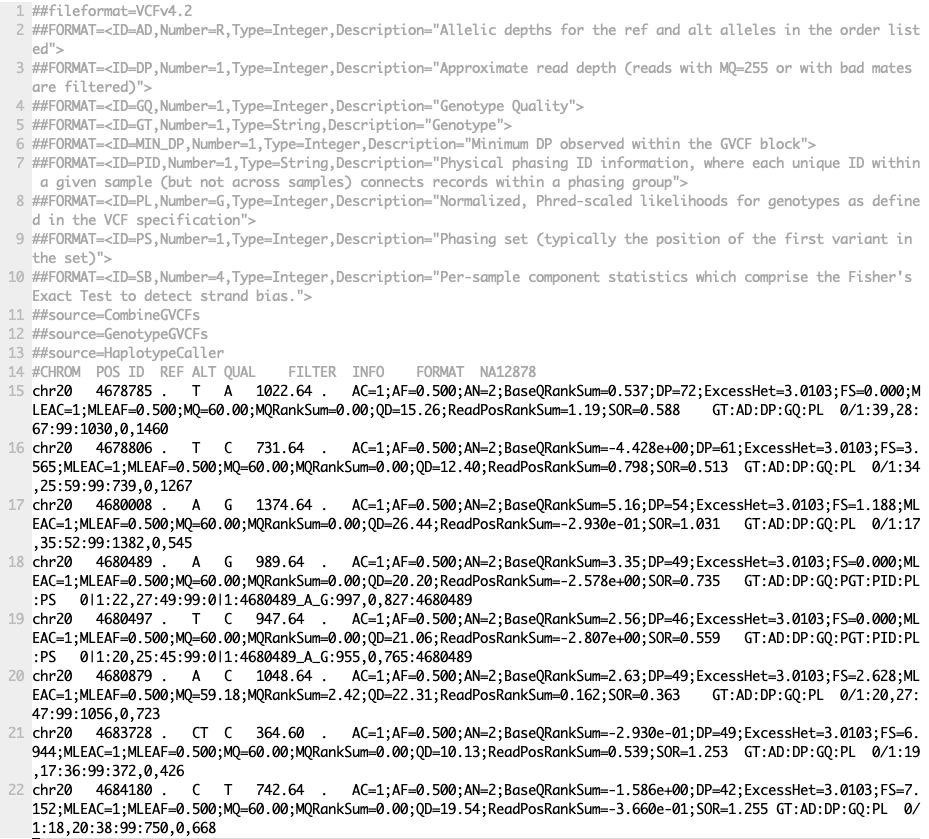

Variant calling using GATK4¶
Anticipated workshop duration when delivered to a group of participants is 4 hours.
For queries relating to this workshop, contact Melbourne Bioinformatics (bioinformatics-training@unimelb.edu.au).
Author Information¶
Khalid Mahmood
Melbourne Bioinformatics, University of Melbourne
Developed: September 2021
Reviewed: June 2023
Overview¶
Topic
- Genomics
- Transcriptomics
- Proteomics
- Metabolomics
- Statistics and visualisation
- Structural Modelling
- Basic skills
Skill level
- Beginner
- Intermediate
- Advanced
This workshop is designed for participants with some command-line knowledge. You will need to be able to ssh into a remote machine, navigate the directory structure and scp files from a remote computer to your local computer.
Learning Objectives¶
At the end of this workshop, you will be able to:
- Take raw DNA sequencing reads and perform variant calling to produce a variant list using GATK4.
- Perform basic exploration of variants.
Description¶
This tutorial runs through the GATK4 best practices workflow for variant calling. The workflow starts and a pair of sequencing reads and performs a series of steps to determine a set to genetic variants.
Data: Illumina HiSeq paired-end (2×100 bp) reads in FASTQ format.
Tools: GATK4, Picard, Bcftools and jigv
Reference data: GATK4 hg38 reference bundle and hg38 refGene annotation (hg38.refGene.gtf.gz)
Requirements and preparation¶
Important
Attendees are required to use their own laptop computers.
At least one week before the workshop, if required, participants should install the software below. This should provide sufficient time for participants to liaise with their own IT support should they encounter any IT problems.
Software
Mac Users: No additional software needs to be installed for this workshop.
Windows Users:
1. A terminal emulator such as PuTTY(free and open-source) will need to be downloaded.
2. Software for file transfers between a local computer and remote server such as WinSCP or FileZilla.
Data
- All required data will be made available on the workshop virtual machines (hosted at the Melbourne Research Cloud). Login details will be provided closer to the tutorial data.
Mode of Delivery¶
This workshop will be run on a Nectar Instance. An “Instance” is Nectar terminology for a virtual machine running on the Nectar Cloud OpenStack infrastructure. An “Instance” runs on a “compute node”; i.e. a physical computer populated with processor chips, memory chips and so on.
You will be given an individual username, IP address and password to log on to using the SSH client tool on your computer (Terminal on Mac or PuTTY on Windows).
ssh username@ip-address
Byobu-screen¶
Some of the commands in this tutorial take a while to run. Should your ssh connection drop and the SSH session on Nectar terminates, any commands that are running will terminate too. To mitigate this, once logged on to the Nectar Instance, we’ll run byobu-screen (an enhancement for the screen terminal multiplexer) which allows us to resume a session. In other words, processes running in byobu-screen will continue to run when their window is not visible, even if you get disconnected.
On Nectar, to start a byobu-screen session called workshop, type
byobu-screen -S workshop
You can then proceed to run the commands in the workshop as normal.
Help: Byobu basics
The screen should look like
Should your SSH session on Nectar terminate, once you log back in to your Nectar instance, list running sessions/screens:
byobu-screen -ls
If it says (Detached) next to the workshop session in the list, reattach to workshop by:
byobu-screen -r workshop
If it says (Attached) next to the workshop session in the list, you can access the workshop session which is already attached by:
byobu-screen -r -d workshop
Some other useful byobu-screen commands:
-
To detach from
workshop, typectrl-a ctrl-dwhile inside theworkshopsession. (You will need to configure Byobu’s ctrl-a behaviour if it hasn’t already been configured (text will appear on the screen telling you this). Follow the information on the screen and select1for Screen mode). -
To terminate
workshop, typectrl-dwhile inside theworkshopsession.
Tutorial setting¶
The setting for this tutorial is as follows: you receive some germline sequencing data from an individual NA12878 (chr20 from sample NA12878 is sourced from the International Genome Sample Resource). Your aim is to identify small genetic variants from this data.
The Genome Analysis Toolkit (GATK)¶
GATK is the industry standard toolkit for analysis of germline DNA to identify SNVs and indels. The GATK tool is mainly designed fo the human whole genome and exome analysis. The current version (GATK4) has expanded scope now and includes more complex analysis such copy number (CNV), structural variant (SV) and somatic variants. The current version of GATK also includes several utility functions for processing alignment files, VCF files and other complex processing workflows. The Picard toolkit is also now incorporated with GATK4. Van der Auwera GA & O’Connor BD. (2020). Genomics in the Cloud: Using Docker, GATK, and WDL in Terra (1st Edition). O’Reilly Media.
How this tutorial works¶
These grey coloured boxes are code blocks. The rectangular boxes in the top
right hand corner of this code block/grey box can be used to copy the code to
the clipboard.
Click here
REVEALED! Coloured boxes like these when clicked will reveal their content.
To copy data from the remote workshop computer to your local computer.
Command line/Mac Users
The syntax to do this depends on whether you are running the copying command on your local computer, or on the remote computer (Nectar cloud).
-
When running the command from your local computer, the syntax for copying a file from Nectar is:
scp username@nectar_IP_address:FILENAME /PATH/TO/TARGET/FOLDER/ -
Running the command on the remote computer, the syntax for copying a file to your local computer is:
scp FILENAME username@your_IP_address:/PATH/TO/TARGET/FOLDER/
SFTP clients
Using WinSCP or FileZilla or CyberDuck you will need the following details to connect and browse.
- Host: The IP address of the Nectar instance
- Username:
- Port:
Tutorial contents table¶
- Section 1: Map raw mapped reads to reference genome
- Section 2: Prepare analysis ready reads
- Section 3: Variant calling
- Section 4: Filter and prepare analysis ready variants
- Section 5: Exporting variant data and visualisation
Section 1: Map raw mapped reads to reference genome¶
1. Preparation and data import¶
Lets start by setting up the directory structure for this analysis.
The data directory is where the raw sequencing reads will be. All output files will be directed to the output directory. All reference files will be pointed to the reference directory. The command-line scripts are stored in simple bash script format in the scripts directory. For those interested, equivalent slurm scripts to run on Spartan are available in the slurm_scripts directory. Although all tools are installed on the server, we will create a tools directory.
Lets begin by creating a byobu-screen session (see above sections for more help):
cd
byobu-screen -S workshop
Create workshop directories:
mkdir data
mkdir output
mkdir reference
mkdir reference/hg38
mkdir scripts
mkdir slurm_scripts
mkdir temp
mkdir tools
Note
All analysis is being carried out in the home directory (the directory you log in to).
The data for this tutorial is sourced from the International Genome Sample Resources. Raw sequencing reads from chromosome 20 are used in this tutorial. We have prepared the files which can be copied as follows:
cp -p /mnt/shared_data/NA12878.chr20.region_1.fastq.gz data/.
cp -p /mnt/shared_data/NA12878.chr20.region_2.fastq.gz data/.
Note
To perform quality control checks on the raw fastq data use the tool FastQC. Another useful QC tool output aggregator is the MultiQC tool. MultiQC aggregates the output from several tools and outputs a single QC report for all samples. We will have a look at some of the QC data later in this section.
Next, we need to prepare the reference data. Luckily, we have downloaded the data and all we need to do is to create a symbolic link to the data folder as follows:
ln -s /mnt/shared_data/* reference/hg38/.
There are several files in the reference directory. These included the GATK bundle of reference files downloaded from (ftp://gsapubftp-anonymous@ftp.broadinstitute.org/bundle/hg38/). Additional files include in the directory are the BWA index files generated for the reference genome.
2. Align genome¶
Run the command below to map the raw sequencing data to the Homo sapiens (human) genome assembly GRCh38 (hg38). We are using the BWA-MEM algorithms for mapping DNA sequences against large reference genomes. Note that we have already run the created the BWA index files by running the command bwa index reference/hg38/Homo_sapiens_assembly38.fasta.
Run BWA as follows, but first navigate to the scripts folder:
bwa mem -M -t 2 \
-R "@RG\\tID:SRR622461.7\\tSM:NA12878\\tLB:ERR194147\\tPL:ILLUMINA" \
reference/hg38/Homo_sapiens_assembly38.fasta \
data/NA12878.chr20.region_1.fastq.gz \
data/NA12878.chr20.region_2.fastq.gz | \
samtools view -b -h -o output/NA12878.bam -
There are two parts to the command here. The first part uses BWA to perform the alignment and the second part take the output from BWA and uses Samtools to convert the output to the BAM format.
At the end of this step you should have a file called NA12878.bam in the output directory.
Section 2: Prepare analysis ready reads¶
1. Sort SAM/BAM¶
The alignment file NA12878.bam is not sorted. Before proceeding, we should sort the BAM file using the Picard tools.
picard -Xmx7g SortSam \
I=output/NA12878.bam \
O=output/NA12878.sort.bam \
VALIDATION_STRINGENCY=LENIENT \
SORT_ORDER=coordinate \
MAX_RECORDS_IN_RAM=3000000 \
CREATE_INDEX=True
The above command will create a coordinate sorted BAM file and an index (.bai) file.
Alignment
Given we now have a sorted BAM file, we can now generate some useful statistics. To do so we can use the samtools flagstat command. More details are available here.
# lets go to the home directory
cd
samtools flagstat output/NA12878.sort.bam
# output
2032568 + 0 in total (QC-passed reads + QC-failed reads)
2030516 + 0 primary
2052 + 0 secondary
0 + 0 supplementary
0 + 0 duplicates
0 + 0 primary duplicates
2032563 + 0 mapped (100.00% : N/A)
2030511 + 0 primary mapped (100.00% : N/A)
2030516 + 0 paired in sequencing
1015258 + 0 read1
1015258 + 0 read2
2030298 + 0 properly paired (99.99% : N/A)
2030510 + 0 with itself and mate mapped
1 + 0 singletons (0.00% : N/A)
182 + 0 with mate mapped to a different chr
124 + 0 with mate mapped to a different chr (mapQ>=5)
2. Mark duplicate reads¶
The aim of this step is to locate and tag duplicate reads in the BAM file. Duplicate reads can arise due to several reasons, for more details go to MarkDuplicates.
picard -Xmx7g MarkDuplicates \
I=output/NA12878.sort.bam \
O=output/NA12878.sort.dup.bam \
METRICS_FILE=output/marked_dup_metrics.txt
Question: How many duplicate reads are in the duplicate marked BAM file?
Answer
samtools flagstat output/NA12878.sort.dup.bam
2032568 + 0 in total (QC-passed reads + QC-failed reads)
2030516 + 0 primary
2052 + 0 secondary
0 + 0 supplementary
7207 + 0 duplicates
7207 + 0 primary duplicates
2032563 + 0 mapped (100.00% : N/A)
2030511 + 0 primary mapped (100.00% : N/A)
2030516 + 0 paired in sequencing
1015258 + 0 read1
1015258 + 0 read2
2030298 + 0 properly paired (99.99% : N/A)
2030510 + 0 with itself and mate mapped
1 + 0 singletons (0.00% : N/A)
182 + 0 with mate mapped to a different chr
124 + 0 with mate mapped to a different chr (mapQ>=5)
3. Base quality recalibration¶
The last step of pre-processing mapped reads is the base quality score recalibration (BQSR) stage. The GATK tools detects systematic errors made by the sequencing machine while estimating the accuracy of each base. The systematic errors can be have various sources ranging from technical machine errors to the variability in the sequencing chemical reactions. The two step BQSR process applies machine learning to model the possible errors and adjust the base quality scores accordingly. More details here.
# lets go to the home directory again
cd
# step 1 - Build the model
gatk --java-options "-Xmx7g" BaseRecalibrator \
-I output/NA12878.sort.dup.bam \
-R reference/hg38/Homo_sapiens_assembly38.fasta \
--known-sites reference/hg38/dbsnp_146.hg38.vcf.gz \
-O output/recal_data.table
# step 2: Apply the model to adjust the base quality scores
gatk --java-options "-Xmx7g" ApplyBQSR \
-I output/NA12878.sort.dup.bam \
-R reference/hg38/Homo_sapiens_assembly38.fasta \
--bqsr-recal-file output/recal_data.table \
-O output/NA12878.sort.dup.bqsr.bam
Note
In a workflow such as this it is a good practice to give the output files an appropriate name. In this case, we are appending the workflow step details to the filenames. For example, append dup after running the mark duplicates step.
We now have a pre-processed BAM file (NA12878.sort.dup.bqsr.bam) ready for variant calling.
But before we proceed, let’s take a detour and run some summary statistics of the alignment data and QC.
BAM statistics and QC
The commands below uses FastQC and Picard to generate QC metrics followed by multiQC tools then aggregating the data to produce an HTML report.
# FastQC
fastqc data/NA12878.chr20.region_1.fastq.gz \
data/NA12878.chr20.region_2.fastq.gz \
-o output/
# CollectInsertSizeMetrics
picard CollectMultipleMetrics \
R=reference/hg38/Homo_sapiens_assembly38.fasta \
I=output/NA12878.sort.dup.bqsr.bam \
O=output/NA12878.sort.dup.bqsr.CollectMultipleMetrics
# MultiQC
multiqc output/. -o output/.
Section 3: Variant calling¶
The next step in the GATK best practices workflow is to proceed with the variant calling.
There are a couple of workflows to call variants using GATK4. Here we will follow the Genomic Variant Call Format (GVCF) workflow which is more suited for scalable variant calling i.e. allows incremental addition of samples for joint genotyping.
1. Apply HaplotypeCaller¶
HaplotypeCaller is the focal tool within GATK4 to simultaneously call germline SNVs and small Indels using local de-novo assembly of haplotype regions.
Algorithm
Briefly, the HaplotypeCaller works by: 1. Identify active regions or regions with evidence of variations. 2. Re-asssemble the active regions. 3. Re-align active region reads to the assembled regions to identify allele. More details about the HaplotypeCaller can be found here.
gatk --java-options "-Xmx7g" HaplotypeCaller \
-I output/NA12878.sort.dup.bqsr.bam \
-R reference/hg38/Homo_sapiens_assembly38.fasta \
-ERC GVCF \
-L chr20 \
-O output/NA12878.g.vcf.gz
The output of this step is a GVCF file. The format for the GVCF file is similar to a VCF file. The key difference is that the GVCF file contains records for each sequenced genomic coordinate. The --emit-ref-confidence or -ERC parameter lets you select a method to summarise confidence in the genomic site being homozygous-reference. The option -ERC GVCF is more efficient and recommended for large samples and therefore more scalable.
2. Apply CombineGVCFs¶
The CombineGVCFs tool is applied to combine multiple single sample GVCF files to merge these in to a single multi-sample GVCF file.
We have pre-processed two additional samples (NA12891 and NA12892) up to the HaplotypeCaller step (above). Lets first copy the gvcf files to the output directory.
#lets make sure that we are in the apropriate directory
cd
cp /mnt/shared_data/NA12891.g.vcf.gz* output/.
cp /mnt/shared_data/NA12892.g.vcf.gz* output/.
gatk --java-options "-Xmx7g" CombineGVCFs \
-R reference/hg38/Homo_sapiens_assembly38.fasta \
-V output/NA12878.g.vcf.gz \
-V output/NA12891.g.vcf.gz \
-V output/NA12892.g.vcf.gz \
-L chr20 \
-O output/cohort.g.vcf.gz
Lets look at the combined gvcf file
less output/cohort.g.vcf.gz
Now that we have a merged GVCF file, we are ready to perform genotyping.
3. Apply GenotypeGVCFs¶
GenotypeGVCFs
gatk --java-options "-Xmx7g" GenotypeGVCFs \
-R reference/hg38/Homo_sapiens_assembly38.fasta \
-V output/cohort.g.vcf.gz \
-L chr20 \
-O output/output.vcf.gz
Information
An alternative to CombineGVCFs is GenomicsDBImport, which is more efficient for sample numbers and stores the content in a a GenomicsDB data store. Therefore, CombineGVCFs could be slow and inefficient for more than a few samples. A possible work around is to split up the tasks per interval regions such as chromosomes.
Visualisations: VCF file
Screenshot from output.vcf.gz 
Section 4: Filter and prepare analysis ready variants¶
1. Variant Quality Score Recalibration¶
The raw VCF file from the previous step (output.vcf.gz) contains 10467 variants. Not all of these are real, therefore, the aim of this step is to filter out artifacts or false positive variants. GATK has provided different workflows for variant filtering. Here we will walk through the Variant Quality Score Recalibration or the VQSR strategy. VQSR is a two step process (1) the first step builds a model that describes how variant metric or quality measures co-vary with the known variants in the training set. (2) The second step then ranks each variant according to the target sensitivity cutoff and applies a filter expression.
#Step 1 - VariantRecalibrator
gatk --java-options "-Xmx7g" VariantRecalibrator \
-V output/output.vcf.gz \
--trust-all-polymorphic \
-mode SNP \
--max-gaussians 6 \
--resource:hapmap,known=false,training=true,truth=true,prior=15 reference/hg38/hapmap_3.3.hg38.vcf.gz \
--resource:omni,known=false,training=true,truth=true,prior=12 reference/hg38/1000G_omni2.5.hg38.vcf.gz \
--resource:1000G,known=false,training=true,truth=false,prior=10 reference/hg38/1000G_phase1.snps.high_confidence.hg38.vcf.gz \
--resource:dbsnp,known=true,training=false,truth=false,prior=7 reference/hg38/dbsnp_138.hg38.vcf.gz \
-an QD -an MQRankSum -an ReadPosRankSum -an FS -an MQ -an SOR -an DP \
-O output/cohort_snps.recal \
--tranches-file output/cohort_snps.tranches
#Step 2 - ApplyVQSR
gatk --java-options "-Xmx7g" ApplyVQSR \
-R reference/hg38/Homo_sapiens_assembly38.fasta \
-V output/output.vcf.gz \
-O output/output.vqsr.vcf \
--truth-sensitivity-filter-level 99.0 \
--tranches-file output/cohort_snps.tranches \
--recal-file output/cohort_snps.recal \
-mode SNP
Countvariants
There are number of ways to count the variants in a VCF file. A very straight forward way using the GATK4 tools is as follows:
gatk CountVariants -V output/output.vqsr.vcf
Tool returned:
10467
There are several protocols for filtering VCF files. We have walked throught the VQSR strategy above and for other options please visit this link.
Filtering strategy for a single sample VCF file
Consider the following method to filter a single sample VCF file. Here we will go through the Convolutional Neural Net based protocol to annotate and filter the VCF file.
This is a two step process:
(i) CNNScoreVariants will annotate the variant with pre-computed single-sample derived model scores in the INFO field CNN_1D (the neural network performs convolutions over the reference sequence surrounding the variant and combines those features with a multilayer perceptron on the variant annotations).
gatk --java-options "-Xmx7g" CNNScoreVariants \
-R reference/hg38/Homo_sapiens_assembly38.fasta \
-V output/output.vcf.gz \
-O output/output.cnns.vcf
(ii) FilterVariantTranches takes as input the percent sensitivities (0-100) to known sites to apply the filter. Variants with scores higher than for e.g. 99th percentile of variants in the resources pass through the filter and will have PASS in the filter. Others will have a filter values like ‘CNN_1D_INDEL_Tranche_99.40_100.00’ or ‘CNN_1D_SNP_Tranche_99.95_100.00’.
gatk --java-options "-Xmx7g" FilterVariantTranches \
-V output/output.cnns.vcf \
--resource reference/hg38/hapmap_3.3.hg38.vcf.gz \
--resource reference/hg38/Mills_and_1000G_gold_standard.indels.hg38.vcf.gz \
--info-key CNN_1D \
--snp-tranche 99.95 \
--indel-tranche 99.4 \
-O output/output.cnns.cnnfilter.vcf
Hint
BCFtools is a useful tool to manipulate, filter and query VCF files. More details from BCFtools. BCFtools can be combined with linux command line tools as well to summarise data. For example, the command below can used extract and print the ‘FILTER’ column from the VCF file.
bcftools query -f'%FILTER\n' output/output.vqsr.vcf.gz
2. Additional filtering¶
The VariantFiltration tools is designed for hard-filtering variant calls based on custom quality criteria such as sequencing depth, mapping quality etc. The two parameters are the filter-name and filter-expression. The parameter filter-name is the name of the filter to be used in the FILTER column if the expression in filter-expression is true. In the example below, if the sequencing depth at the variant site (VCF field DP) is less than 10, the FILTER field will be populated with the value ‘Low_depth10’. Users can add multiple filter expression/name combinations.
gatk --java-options "-Xmx7g" VariantFiltration \
-R reference/hg38/Homo_sapiens_assembly38.fasta \
-V output/output.vqsr.vcf \
-O output/output.vqsr.varfilter.vcf \
--filter-name "Low_depth10" \
--filter-expression "DP < 10"
Question: How many variants have a low sequencing depth (DP<10) in the file output.vqsr.varfilter.vcf.
Answer
bcftools query -f'%FILTER\n' output/output.vqsr.varfilter.vcf | sort | uniq -c
6 Low_depth10
2 Low_depth10;VQSRTrancheSNP99.00to99.90
9 Low_depth10;VQSRTrancheSNP99.90to100.00
9064 PASS
1278 VQSRTrancheSNP99.00to99.90
108 VQSRTrancheSNP99.90to100.00
3. Final analysis ready VCF file¶
Given we have a filter annotated VCF files (), we can now create an analysis ready VCF file.
Question: Create a VCF file called output/output.vqsr.varfilter.pass.vcf.gz that contains only PASS variants? The input VCF file is output/output.vqsr.varfilter.vcf.” Hint: try using the Bcftools application.
Answer
Use the bcftools to filter PASS variants.
bcftools view -f 'PASS,.' -O vcf -o output/output.vqsr.varfilter.pass.vcf output/output.vqsr.varfilter.vcf
We have now created an analysis ready version of the VCF file. It is also a good practice to compress and index the file.
bgzip -c output/output.vqsr.varfilter.pass.vcf > output/output.vqsr.varfilter.pass.vcf.gz
tabix -p vcf output/output.vqsr.varfilter.pass.vcf.gz
Section 5: Exporting variant data and visualisation¶
VCF files, although in tabular format, are not user friendly. We will go through a couple of ways to share share and visualise variant data. This is important for downstream analysis as well as sharing data. First, we will convert the VCF file in to a TSV file (ready for Excel for example) in a manner where we extract data fields of interest.
1. VariantsToTable¶
This GATK4 tool extracts fields of interest from each record in a VCF file. VariantsToTable can extract field from both the INFO and FORMAT columns in the VCF file.
Note
VariantsToTable, by default, only extracts PASS or . (no filtering applied) variants. Use the --show-filtered parameter to show all variants.
gatk VariantsToTable \
-R reference/hg38/Homo_sapiens_assembly38.fasta \
-V output/output.vqsr.varfilter.pass.vcf.gz \
-F CHROM -F POS -F FILTER -F TYPE -GF AD -GF DP \
--show-filtered \
-O output/output.vqsr.varfilter.pass.tsv
2. HTML report¶
Another useful method for sharing data is an interactive HTML file. This is suited for sharing a smaller subset of variants along with sequencing data. Here we will go through a simple example using the jigv tool.
We will start with creating a subset of variants to report.
bcftools view output/output.vqsr.varfilter.pass.vcf.gz \
chr20:3822018-3999324 | \
bgzip -c > output/subset.vcf.gz
tabix -p vcf output/subset.vcf.gz
Now, we will call the jigv tool command to generate the report.
jigv --sample NA12878 \
--sites output/subset.vcf.gz \
--fasta reference/hg38/Homo_sapiens_assembly38.fasta \
output/NA12878.sort.dup.bqsr.bam > output/NA12878.jigv.html
Here is an example report we created earlier.